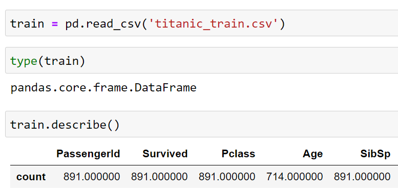
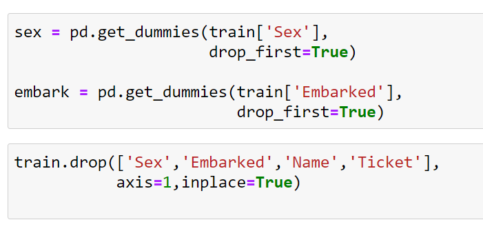
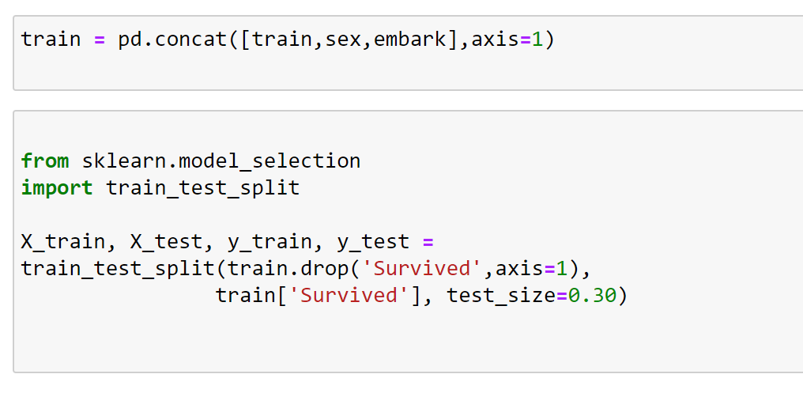

Titanic Surivors Predictive Model
Logistic regression model fitted with passenger data derived from the sinking of the Titanic.

The passenger data utilized by the model was obtained using a popular data science library for python named Pandas. Pandas contains a convienent Pandas.read_csv() method which inputs the data from the .CSV file into the calling methods memory space, in an easy to read/interpret data structure known as a DataFrame. Referenced "Pandas.DataFrame()".
After inputting the passenger data to my M.L. models workspace, it had to be cleaned and prepared for the fitting of the model. In this case the data set was missing a sizeable amount of data from both passenger's known age and also the cabin for which each passenger stayed the night. Due to this I decided it would be best to drop the cabin label in due to over half the data set missing it. As for the age, I calculated a fitting imputation and filled the missing data labels with these imputations.
 After the data was cleaned, it was ready for the model to be fitted. Which required the creation of dummy variables from each categorical data type. In order to avoid multi-collinearity I dropped any perfect predictive variables. By using Pandas DataFrame.Drop() method, and ensuring in place was set to true (ensures original DataFrame saves changes).
 To round off this step I split my newly cleaned data into both a test and train set using sklearn cross validation method "train_test_split".
Now that I had both a cleaned test and trained data set it was time to instantiate a linear regression model to fit my training
data to. This was achieved with sklearn's LogisticRegression model. After instantiating the logistic model I fit it with the training data
and then used the model to make predictions given the test data. To ensure metrics were up to my standard I used sklearn's classification_report
to retrive my models precision, recall, and f-1 score.
If you have any questions feel free to send me an email below!